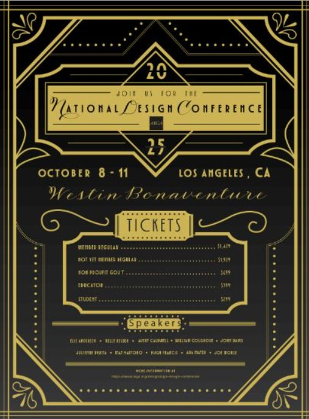

Venacular Poster
This was the first project we were given in advanced typography, giving us a way to show off our typography skills that we had to start with. We were given about 2 and a half weeks to work on the project.

The goal was to make a vernacular for the 2025 Los Angeles National Design Conference. We were to go online and find data on the event and find a few guest speakers as well to add to our poster design. With that, we could use the text and arrange them however we pleased, making sure that it was a vernacular of some sort. For the poster, I used Adobe InDeisgn. The vision that I was going for was a Great Gatsby invitation card- or something adjacent to those times. The patterns and calligraphy type writing went well with my vision. The Posters were to be printed out, mine being around 15x20, and would be displayed for the rest of the school year.